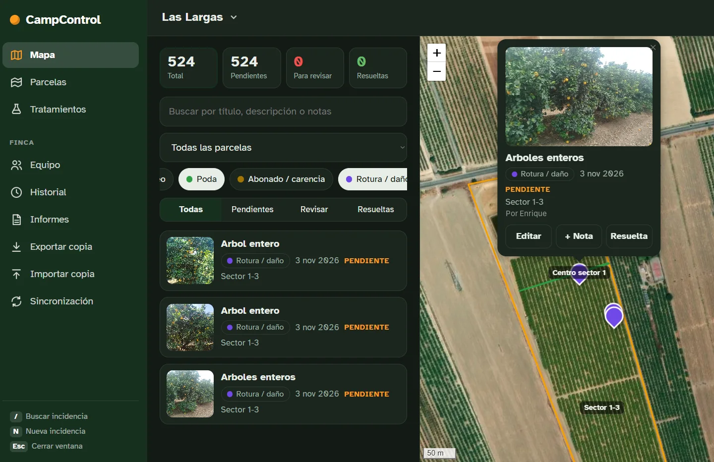
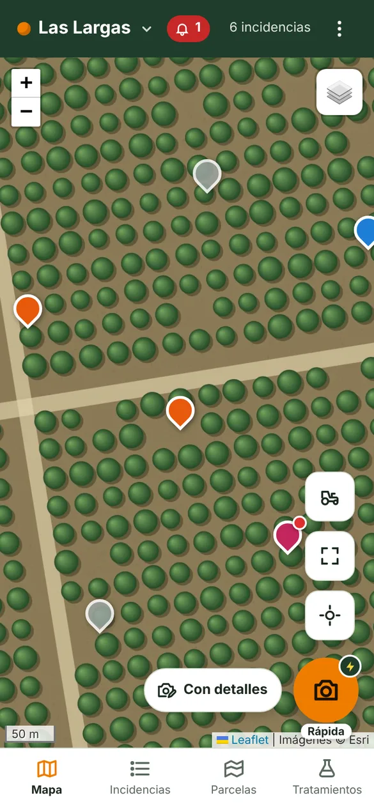
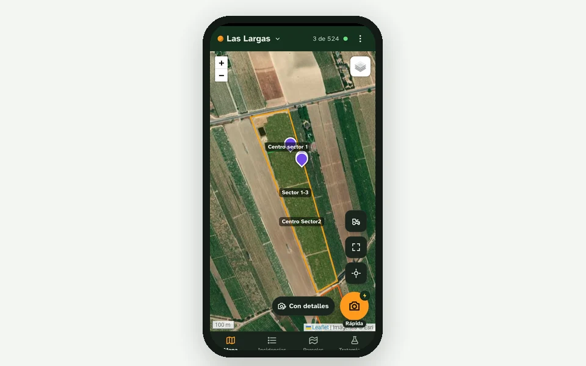
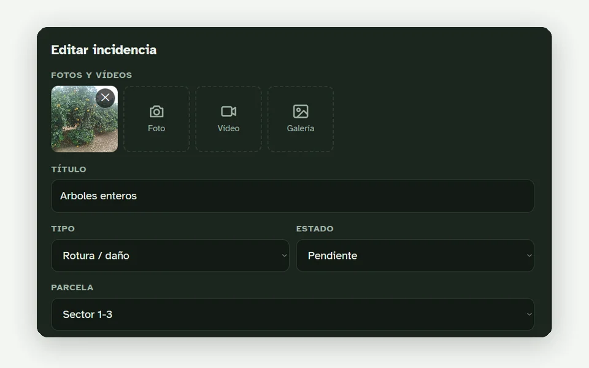
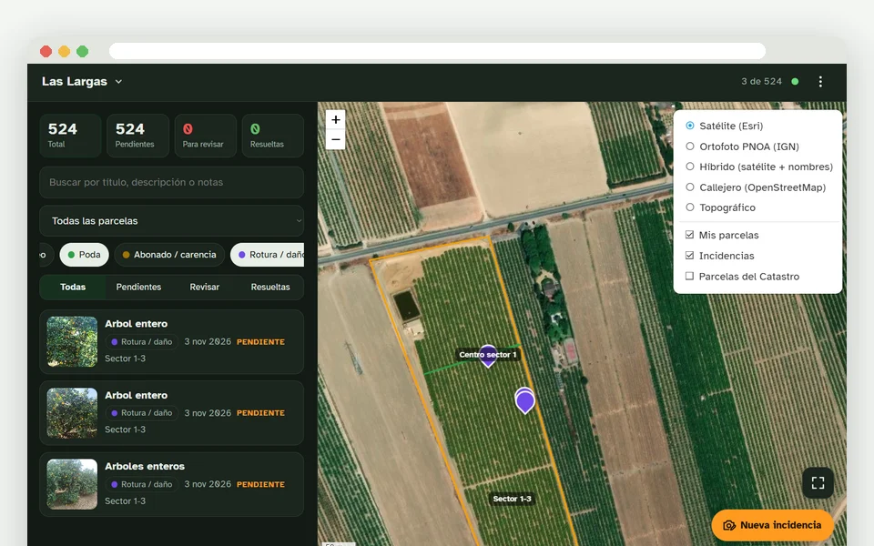
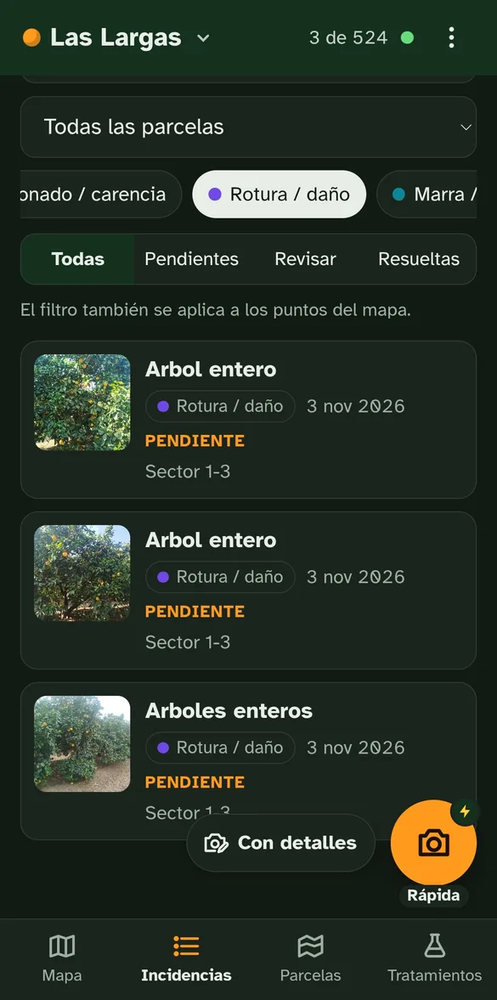

Las incidencias de tu finca, en el mapa
Haz una foto al naranjo, describe lo que le pasa y queda marcado en su sitio exacto. Tu equipo lo ve al momento en el móvil, y tú lo revisas con calma en el ordenador.
Una sola cuenta para el móvil y el ordenador. · descargas


Cómo funciona
Pensada para usarla con una mano, en mitad del campo
Sin libretas ni mensajes sueltos. Lo que ves en el árbol queda apuntado en su sitio.

Paso 1Haz una foto o un vídeo
Con el botón naranja la foto sale con su ubicación al momento. Si tienes prisa, la completas luego.

Paso 2Añade lo que pasa
Tipo de incidencia, fila, árbol y una nota. Si hay que volver a mirarla, pon una fecha de revisión.

Paso 3Tu equipo lo ve en el mapa
Aparece en el móvil y en el ordenador de todos. Cuando se resuelve, se marca como resuelta.

En el campo
Todo lo pendiente, a mano en el bolsillo
Busca por título, filtra por tipo o por parcela y ve directo al árbol en el mapa.
- Avisos de revisiónLa app te recuerda las incidencias que tocan revisar.
- Funciona con poca coberturaGuarda primero en el móvil y sube los cambios cuando hay conexión.
- Satélite, calles o relieveElige la capa de mapa que mejor se vea en tu finca.
Empieza a usarla en tu finca
Descárgala en el móvil, crea tu finca e invita a tu equipo. Desde el ordenador lo tendrás todo a la vista.